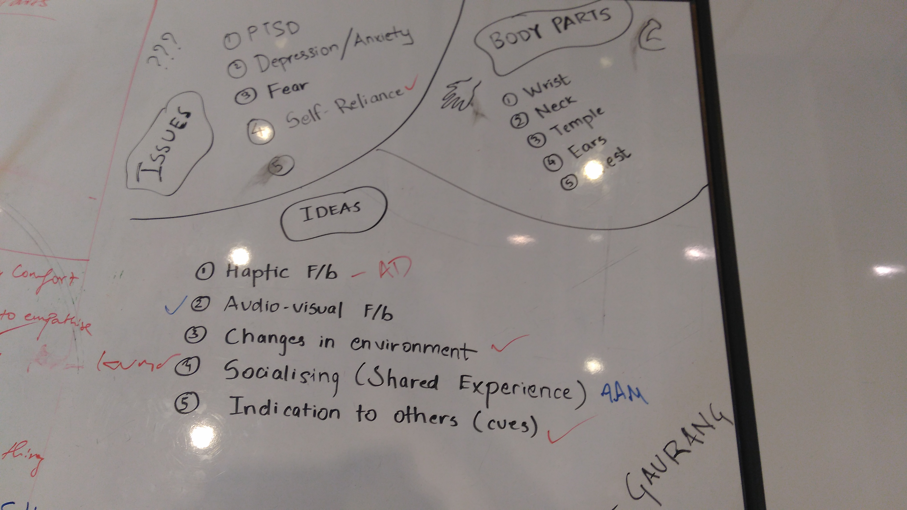
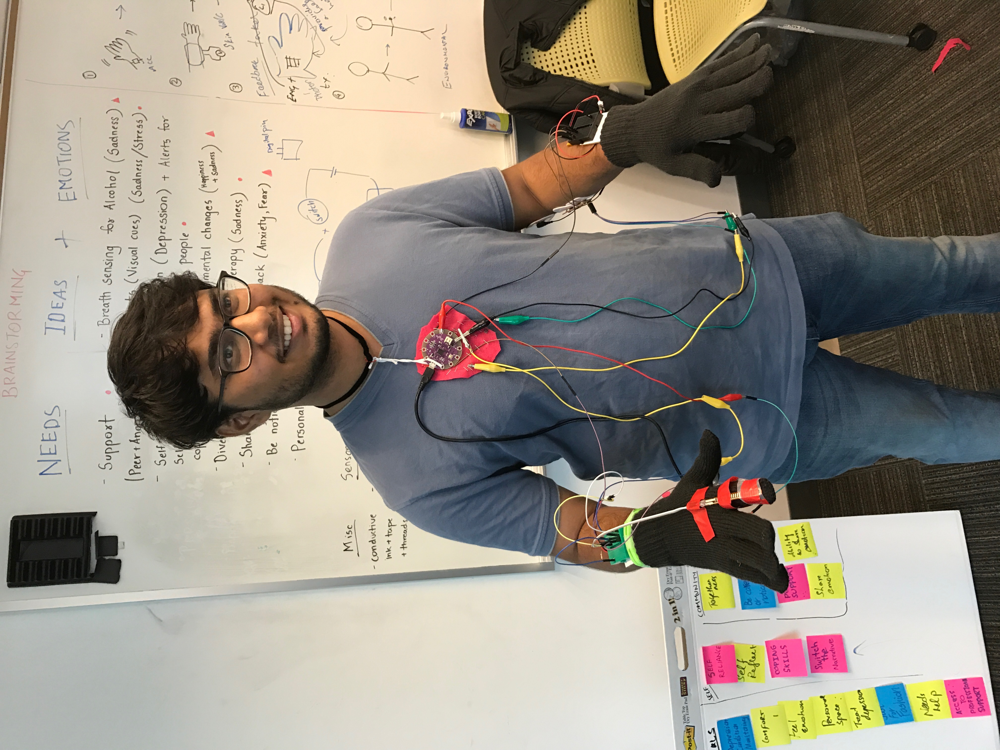

EmoSense - Emotion Sensory Design
Prototype developed at the Critical Making Workshop organized by MISC-DoIIT at UMSI
EmoSense is a wearable product that lets you share your emotions. The main idea behind developing EmoSense is to let users share their experiences using wearables. Wearable technology today offers an experience only to the user using it. The aim of EmoSense is to create sharing of emotions using wearable technology.

THE ISSUE
Almost all people experience emotional problems at a stage in their life. Sometimes they prefer to deal with it on their own and do not wish to let others know of their suffering. Sometimes they long for someone to help them out, and talk to them. Some prefer to get medical assistance. Usually people try to ignore the problem and then it deteriorates into a serious condition, resulting into depression and possibly suicide.
IDEA PROPOSED
The objective was to develop a pair of wearables, where one would be worn by a user and the second would be worn by another. By employing haptic feedback, User A can be made self-reliant by turning on the vibration when stress is detected, or User B can be notified that User A is feeling stressed. User B can then activate the heating pad placed inside the glove of User A. The heating pad is supposed to provide warmth and comfort to the user A.
PROCESS
The team was formed because of our common objective, to share experiences using wearable technology. Holding on to this thought, we started brainstormed using post-its and grouped ideas sharing a theme. We then devised 3 different personas, envisioning people who would really use the product. We targeted negative emotions of fear, anxiety, anger, stress and sadness. After listing down the ideas that could target the emotions, we looked at the inventory of devices available. Refining the idea again considering the plausibility of each, we moved on to the sketching phase and sketched out design ideas. By this time we had a clear idea of what we wanted to implement. The next and final step was prototyping, which began with individual sensor testing and finally resulted into sensor integration with LilyPad Arduino.
IMPLEMENTATION
The prototype integrated about 80% of the final idea, and basically had a 2-way communication mechanism. Due to time constraints, work on wireless transmission had to be stopped midway and we focused only on the integration and 2-way communication. Setup mounted on left hand symbolises the circuit on an individual, while the setup on the right hand shows the circuit for another individual.

Circuitry mounted on the left hand (see pic), used a Muscle Sensor to measure EMG signals. When a stress in the muscles was detected, the haptic mototr on the right hand would start vibrating, thus serving as a notification. The right hand had a flex sensor and anytime the wrist is closed, it would send a signal to the left hand, turning on the heating pad. In the video attached, we replaced the heating pad with a simple LED on the LilyPad for demonstration purposes.
The developed product served the following purposes-
- Self reliance due to haptic feedback
- Peer support system
- Sharing of emotional experience
- Notifying friends/ family/ doctors about issue
CHALLENGES
The main challenges we faced were to integrate all the sensors and actuators, and enable wireless communication in under a day. Due to limited time and choice of devices available, ideas from the brainstorming session had to modified to include the practical aspects of the project.
FUTURE
The wiring between the two setups can be replaced by using WiFi or Bluetooth technology. to increase self reliance, signal can be sen to a Bluetooth speaker so that calimng sountracks can be played. This signal can also be used to modify ambient lighting in the room to induce a feeling of comfort and warmth.